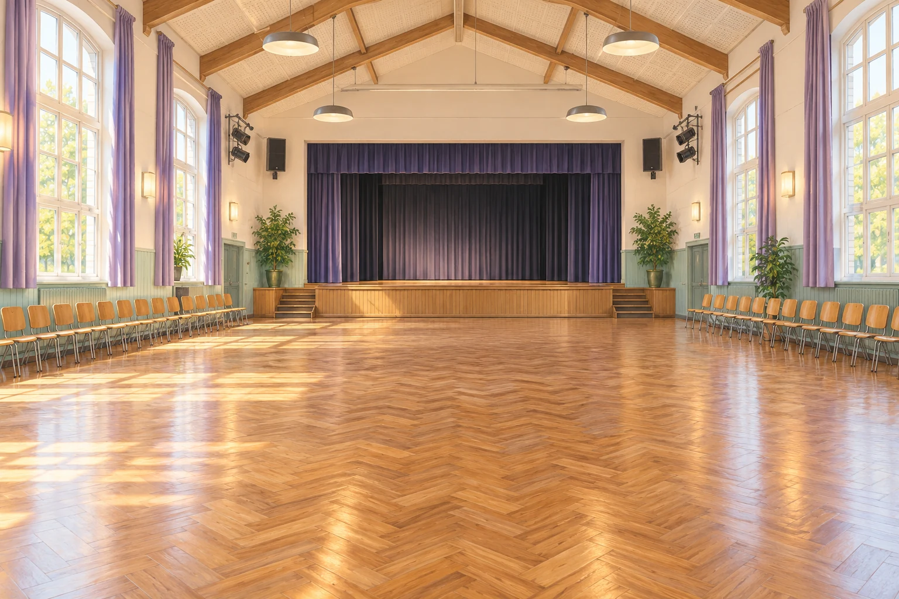

Wie viele verschiedene stehende Schallwellen mit Frequenzen zwischen 20 Hz und 20 kHz sind ungefähr in der Aula möglich, wenn ihr nur Schwingungen entlang der längsten Raumrichtung betrachtet?

Fermi-Aufgabe 31 · Q2 LK
Wie viele verschiedene stehende Schallwellen mit Frequenzen zwischen 20 Hz und 20 kHz sind ungefähr in der Aula möglich, wenn ihr nur Schwingungen entlang der längsten Raumrichtung betrachtet?

Findet eine mögliche Antwort und entwickelt dazu euren eigenen Lösungsweg.